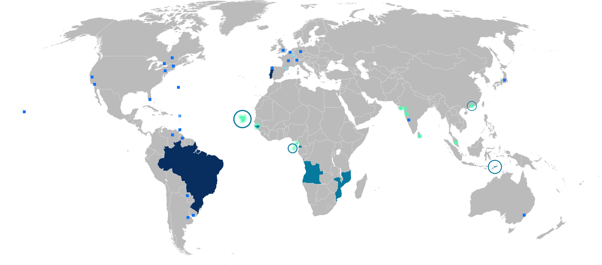

Portuguese > Language Overview
Language Overview
The Portuguese language is the sixth most spoken language in the world and has a widespread presence across the continents. There are about 240 million native speakers, including the people of Portugal, Brazil, several African countries, and other small enclaves throughout the world. It is the most spoken language of the Southern Hemisphere, and an official language of the European Union, Mercosur, OAS, ECOWAS and the African Union.
Map of Portuguese Speaking Areas around the World

The Portuguese language is an Iberian Romance language, deriving most of its grammar from classical Latin. View the Grammar Topics below to learn more.
Portuguese > Portuguese Grammar
Grammar Topics
Choose a grammar topic below.
OrthographyArticles
Nouns
Adjectives
Adverbs
Prepositions
Pronouns
Verb Variations
Regular Verbs
Auxiliary Verbs
Conjunctions
Numbers, Time, and Dates
Portuguese > Learning Resources
Additional Resources
Android App
Android mobile application for quick reference and study
top